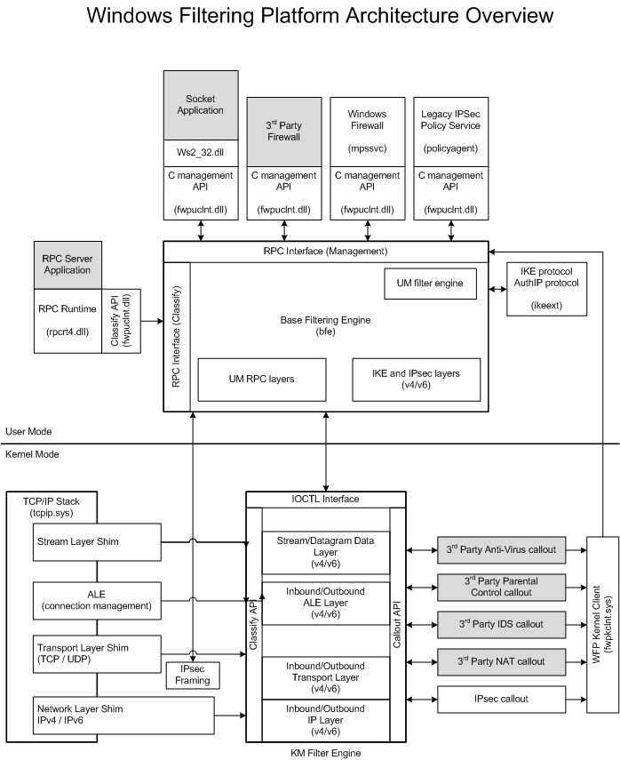

The following figure shows the basic architecture of the Windows Filtering Platform (WFP).

The filter engine contains a user-mode component and a kernel-mode component, which together perform all of the filtering operations on network data. The filter engine contains multiple filtering layers that map loosely to the operating system's networking stack layers. The filter engine layers are divided into user-mode layers and kernel-mode layers based on the filter engine component that owns them.
The user-mode component performs RPC and IPsec filtering. The filter engine contains approximately 10 user-mode filtering layers.
The kernel-mode component performs filtering at the network and transport layers of the TC/IP stack. This component also calls the available callout functions during the classification process. The filter engine contains approximately 50 kernel-mode filtering layers.
See Filtering Layer Identifiers for a description of each of the filter engine layers.
The Base Filtering Engine (BFE) is a user-mode service (bfe.dll running in a svchost.exe process) that coordinates the WFP components. The principal tasks performed by BFE are adding and removing filters from the system, storing filter configuration, and enforcing WFP configuration security. Applications communicate with BFE through the WFP management functions.
Callout drivers provide additional filtering functionality by adding custom callout functions to the filter engine at one or more of the kernel-mode filtering layers. Callouts support deep inspection and packet as well as stream modification. After a callout driver has added its callout functions to the filter engine, filters that specify a given driver's callout function can be added to the filtering process. Such filters can be added by either a user-mode management application or by the callout driver itself. The kernel-mode interface, delivered in the Windows Development Kit, should only be used where needed and not as a substitute for the user-mode API.
[!Note]
For more information on callout drivers, see the Windows Filtering Platform section of the Windows Development Kit.
Â
The Windows Filtering Platform includes a number of built-in callout functions that can be used for IPsec secure data communication, stateful filtering settings, and stealth-mode filtering. See Built-in Callout Identifiers for a complete list of built-in callout functions.
Windows Filtering Platform Callout Drivers - Design Guide
Windows Filtering Platform Callout Drivers - Reference
Â
Â